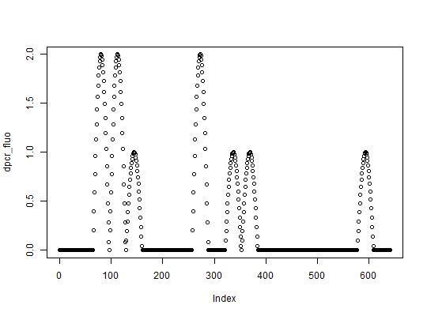

A class containing results of any digital PCR experiment.
Type of data in all columns is specified in slot "type".
Possible type values of dpcr objects:
"ct": cycle threshold of each partition,
"fluo": fluorescence of each partition,
"nm": number of molecules in each partition,
"np": status (positive (1) or negative(0)) of each partition,
"tnp": total number of positive partitions in the run (single
value per each run, not per partition).Digital PCR data is always a matrix, where columns and rows represent
respectively runs and data points. For example, matrix with 2 columns and 765 rows
means two runs with 765 data points each. In case of "tnp" data, each run is
represented by only one measurement, the count of all positive partitions.
The number of partitions is defined in slot n. In the previous example,
two runs have 765 data points, but they can have less detected partitions
(for example some reads may be not available). In this case, the data point will
have value NA.
The structure of dpcr class is described more deeply in the vignette.
.Datamatrix data from digital PCR experiments. See Details.ninteger equal to the number of partitions in each run.experfactor the id or name of experiments.replicatefactor the id or name of replicates.assayfactor the id or name of the assay.v"numeric" volume of the partition [nL].uv"numeric" uncertainty of the volume of the partition [nL].threshold"numeric" value specifying the threshold. Partition with
the value equal or bigger than threshold are considered positive.type"character" defining type of data. See Details.This class represent the most general droplet-based digital PCR. In more specific
cases, the user is directed to other classes: adpcr, where
results can be placed over a plate, qdpcr where digital
assay is based on multiple qPCR experiments and rtadpcr,
where data points represent the status of partitions measured in the
real time.
